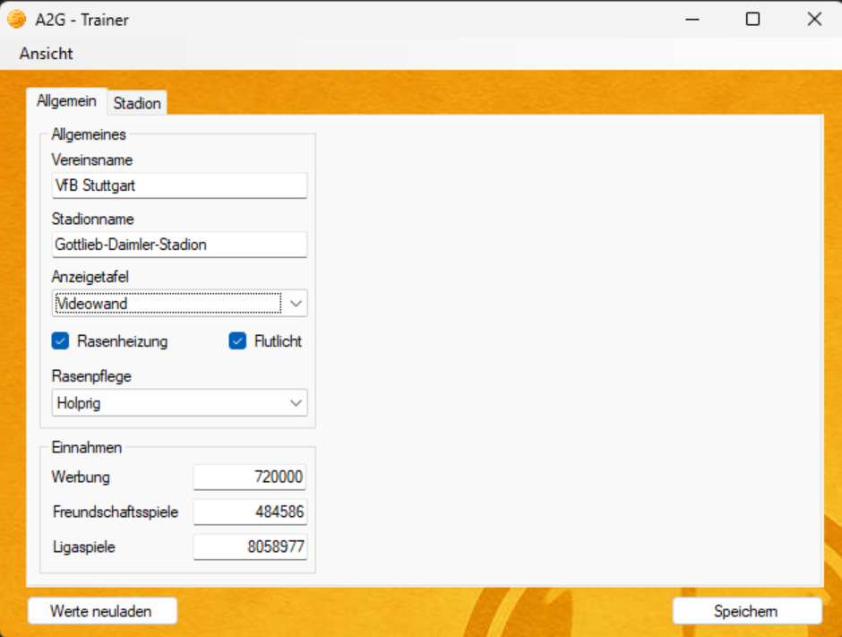
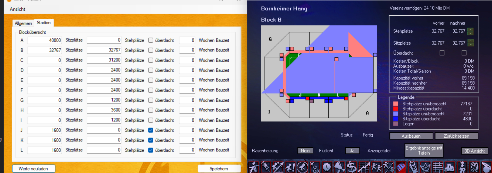
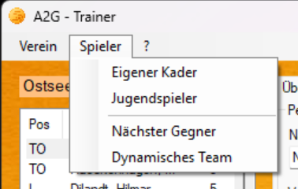
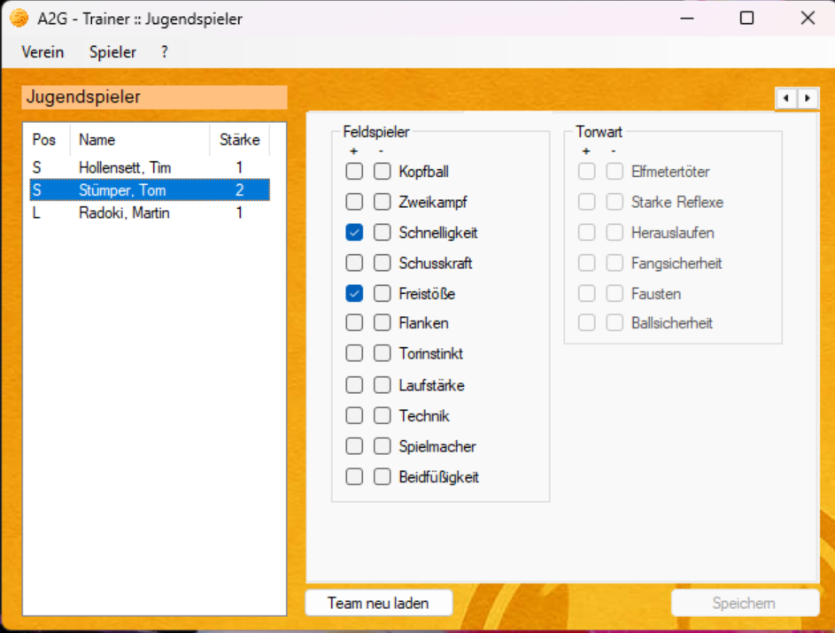
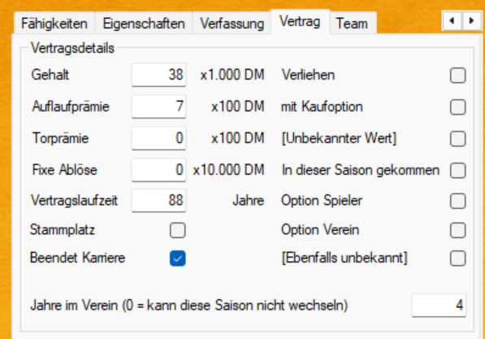
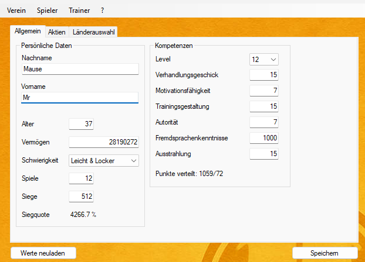

Neueste Version herunterladen
Version wird geladen…Enthält beide .exe-Varianten (Original & GOG), die Cheat-Engine-Tabellen und das Änderungsprotokoll. Der Link zeigt immer auf den aktuellsten Release.
Ein Trainer (Editor) für Anstoss 2 Gold, kompatibel mit der Original-CD und der GOG-Version, lauffähig von Windows XP bis Windows 11.
Diese Onlinehilfe erklärt alle Funktionen des Trainers im Detail. Wählen Sie oben in der Menüleiste oder links in der Liste einen Bereich:
Vereinsname, Stadion, Finanzen und Blockübersicht bearbeiten.
Kader, Gegner und dynamisches Team editieren: Fähigkeiten, Vertrag, Verfassung.
Was bei Nachwuchsspielern dauerhaft gespeichert wird und was nicht.
Manager, Aktien, Ländereinstellungen und Hot-Seat-Unterstützung.
Kleine Kniffe, die vielen Nutzern Zeit sparen.
Häufige Fragen und Lösungen, inklusive Logdatei.
Was sich von Version zu Version geändert hat.
Erreichbar über . Die Vereinsansicht öffnet sich in einem eigenen Fenster mit zwei Registerkarten.
Über Werte neuladen werden die aktuellen Werte erneut aus dem laufenden Spiel gelesen (z. B. nach einer Änderung im Spiel selbst), über Speichern werden Ihre Eingaben zurückgeschrieben.

Zum Vergleich: Die folgende Ansicht zeigt links die Trainer-Blockübersicht, rechts die zugehörige Stadion-Grafik im Spiel selbst.

Erreichbar über das Menü . Für jeden Spieler öffnet sich eine Detailansicht mit sieben Registerkarten.

Für Feldspieler- und Torwart-Fähigkeiten gibt es jeweils zwei Kontrollkästchen pro Zeile: + für eine positive und - für eine negative Ausprägung der Fähigkeit.


Erreichbar über . Nutzt dieselbe Detailansicht mit denselben Registerkarten wie der eigene Kader.
Manager-Daten, Aktienportfolio und Ländereinstellungen für die aktuelle Karriere.

Ein paar Kniffe rund um den Trainer, die im Alltag Zeit sparen.
Häufige Fragen rund um Verbindung, Speichern und Kompatibilität.
Vollständige Versionshistorie, live geladen von den GitHub Releases.
Changelog wird geladen…